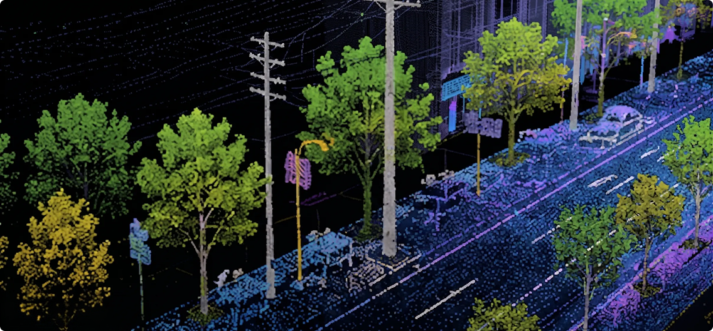
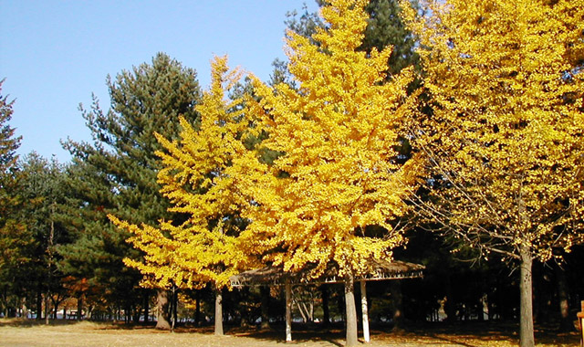

LiDAR 파일을 첨부하고 객체탐지를 실행해주세요
AI가 파일을 분석하여 수목 및 시설물 객체를 정밀하게 분석합니다.

| 순번 | 유형 | 위치 | 높이(m) | 수관폭(m) |
|---|---|---|---|---|
| 1 | 수목 | X: 324.156 Y: 215.672 | 12.4 | 8.2 |
| 2 | 수목 | X: 318.042 Y: 221.308 | 11.8 | 7.6 |
| 3 | 전신주 | X: 330.511 Y: 210.094 | 9.5 | - |
| 4 | 수목 | X: 312.780 Y: 228.451 | 10.2 | 6.9 |
| 5 | 기타 시설물 | X: 341.226 Y: 205.833 | 3.1 | - |
